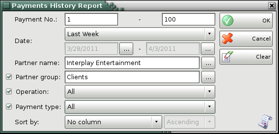
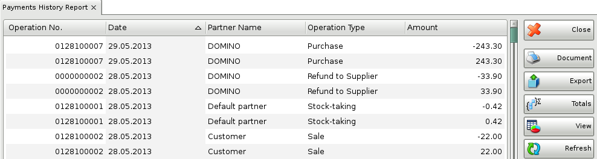

Payments history report
In the first window of the report specify the filter criteria and the fields that will be visualized.
Only rows that are checked are visualized in the report.

You can choose a filter for each field by pressing the F4 key.
You can limit the report to a single criterion - for example, visualize payments of a single partner, or you can apply several criteria at a time - for example, visualize payments of a particular customer for a particular period of time.
In the Operation drop-down list select whether to include all operations or only one kind.
To remove all specified filters, click the Clear button. The report will display all operations without any restrictions.
Click the OK button to generate the report using the specified criteria. Click Cancel to close the window.

The Payments history report contains information about unpaid and/or partially paid operations and subsequent payments. It displays the document number, the date, the partner, the operation, the payment type and the amount. If the amount has a negative value, no payment has been done. If the amount has a positive value, the payment has been done.
Close button closes the report, Document button is used for report print preview, button Export to exports the report to CSV, Excel, Web Page or XML Data format and Totals button adds a line at the bottom of the window, that contains quantities and values amounts for each column.
�2008-2013 Microinvest, All rights reserved